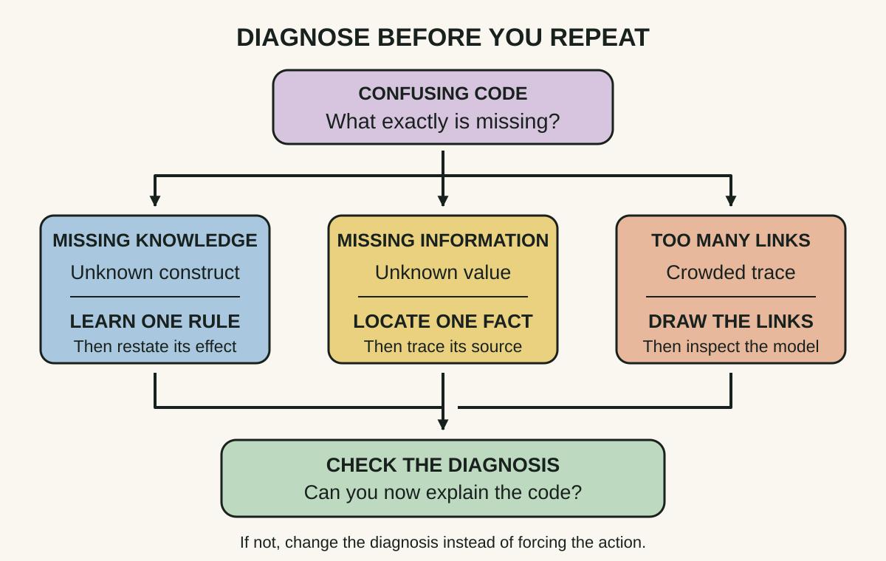
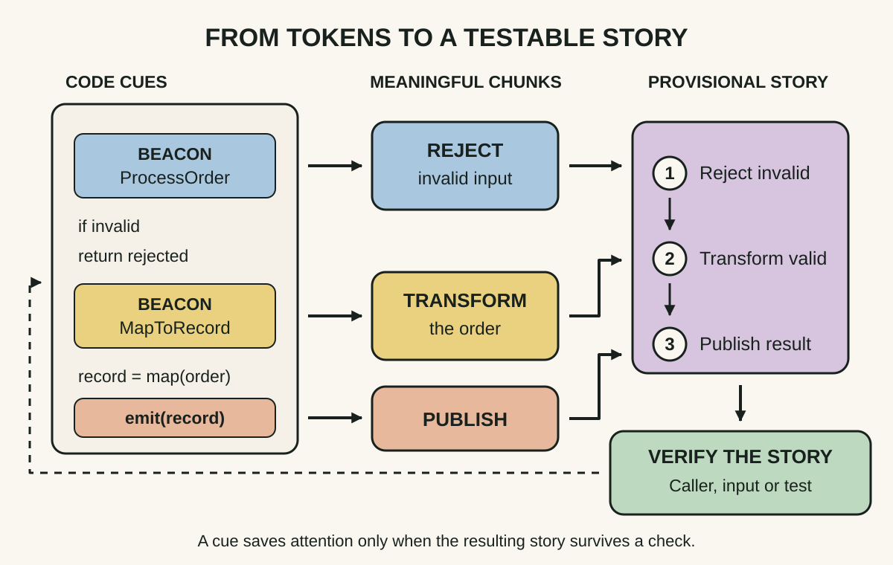
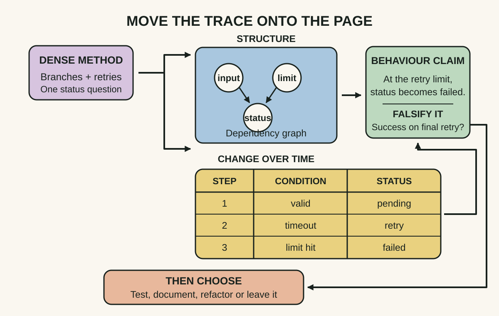

Daily lesson ·
The Programmer’s Brain
Read difficult code by naming the kind of confusion, using meaningful cues to build larger chunks, and moving a crowded execution trace out of working memory.
Idea 1
Name the kind of confusion #
The idea
Hermans separates three reasons code can feel confusing. You may lack stored knowledge, such as the meaning of an unfamiliar language feature. You may lack information that is present but not yet held, such as the value assigned several lines earlier. Or you may have the facts but lack enough working-memory capacity to process all their interactions at once.
The distinction matters because each problem calls for different help. Learning a concept addresses a knowledge gap. Locating a value addresses an information gap. Drawing the relationships or reducing incidental complexity addresses a processing gap. Reading the same lines again is not a universal remedy.

Why it matters
A generic feeling of being stuck can trigger random searching, premature rewriting or self-blame. A specific diagnosis turns the stall into a smaller question and makes it easier to tell whether the next action actually helped.
Apply it today
Choose one line in current code that you cannot confidently explain. Write K for missing knowledge, I for missing information, or P for processing overload, and add one sentence of evidence for the label.
Take one matching action: look up one construct, trace one value to its source, or sketch the interacting parts. Then explain the line again without copying the source you used.
Caveat or failure mode
The categories are a useful reading aid, not a precise measurement of memory. More than one cause can be present, and stress, fatigue, poor naming or missing domain context can change what feels difficult. If the first action does not improve your explanation, revise the diagnosis rather than forcing the label.
Idea 2
Build meaning from chunks and beacons #
The idea
Hermans describes chunking as grouping small code elements into a meaningful unit held as one idea. Experienced programmers can recognise familiar structures, so a loop that searches for a matching record can become one mental chunk instead of many tokens competing for attention.
Beacons are semantic cues that suggest a program's purpose or structure, such as a well-chosen name, a familiar API call or a characteristic control pattern. They help the reader form a hypothesis, but the hypothesis still needs to be checked against the surrounding code and behaviour.

Why it matters
Token-by-token reading consumes attention without guaranteeing understanding. Meaningful chunks let prior knowledge carry more of the load, while explicit verification prevents a familiar name or pattern from becoming an unchecked assumption.
Apply it today
Open a method you did not write. Mark three possible beacons, then divide the method into no more than four behavioural chunks.
Write one verb phrase for each chunk. Use a sample input, test or caller to find one fact that supports or contradicts your proposed story.
Caveat or failure mode
Beacons can mislead when names are stale, conventions are violated or a familiar pattern hides an unusual side effect. Chunking is also knowledge-dependent: difficulty recognising a chunk is not evidence of low ability. Verify the inferred story and update it when the code disagrees.
Idea 3
Move the trace onto the page #
The idea
For code that overloads working memory, Hermans recommends external aids. A dependency graph records which parts rely on which others. A state table records how relevant values change over steps. Together they preserve relationships that a reader would otherwise repeatedly reconstruct.
The book also discusses refactoring or replacing unfamiliar constructs to reduce cognitive load. Externalising first separates a comprehension aid from a production change: you can learn how the code behaves before deciding whether the code itself should change.

Why it matters
Notes stop the reader paying the same mental cost on every pass. They also make reasoning reviewable: a colleague can challenge a missing edge or an incorrect state transition instead of debating an invisible mental model.
Apply it today
Pick one question about a difficult method. If it concerns influence, draw nodes and arrows. If it concerns change over time, make columns for step, condition and value.
Write one behaviour claim from the diagram and one input that might disprove it. Only after that decide whether a code change, a test or better documentation is justified.
Caveat or failure mode
A diagram can become another source of error or busywork. Keep it tied to one question, compare it with executable behaviour, and discard it when it no longer helps. Some complexity belongs to the domain; reducing visual complexity must not erase important rules or silently change behaviour.
Knowledge check · 6 questions
Learning check
Answer all 6, then check your answers. Your first result stays in this browser, and each explanation appears after you check. A 3-question review can appear on the homepage from tomorrow.
6 questions not yet answered.
Today's experiment · 9 minutes
Read one method with a cognitive map
- Minutes 0 to 2: choose a method of roughly 15 to 40 lines that you did not write. Write one question you want the method to answer.
- Minutes 2 to 4: mark your main confusion K, I or P, write one reason, and take one matching action.
- Minutes 4 to 6: circle up to three beacons and divide the method into no more than four behavioural chunks. Give each chunk a verb phrase.
- Minutes 6 to 8: draw either a dependency graph or a state table for the original question. Keep it to the relationships that affect the answer.
- Minute 8 to 9: write one sentence explaining the behaviour and one input or path that could prove your explanation wrong.
Observable result: An annotated method, a small external trace, one behaviour claim and one falsifying case. Compare your explanation before and after; the observable result is whether you can now answer the original question without rereading the whole method.
Retrieval practice
Spaced recall
- From Debugging: where would you place a boundary observation if your external trace contains one uncertain transition?
- From Refactoring: what must stay true when a comprehension-driven cleanup changes code structure?
- From The First 90 Days: which real decision should determine what you learn about an unfamiliar codebase first?
Verification
Source notes
These links support the attributed claims and edition details; applications and extensions are labelled in the lesson.
- Manning: The Programmer's Brain, first-edition details, scope and author biography
- O'Reilly catalogue: complete contents, including confusion, chunking, beacons, cognitive load, dependency graphs and state tables
- Felienne Hermans: official book page and author-selected talks and interviews
- InfoQ: Hermans's presentation and transcript on cognitive processes and techniques for reading code
- Siegmund and colleagues: replicated fMRI study of program comprehension, working memory, attention and language processing
- Peitek and colleagues: evidence of semantic chunking and reduced neural effort from meaningful code cues
- Baum and colleagues: context-dependent evidence on cognitive load and explicit strategies during code review
One-sentence takeaway